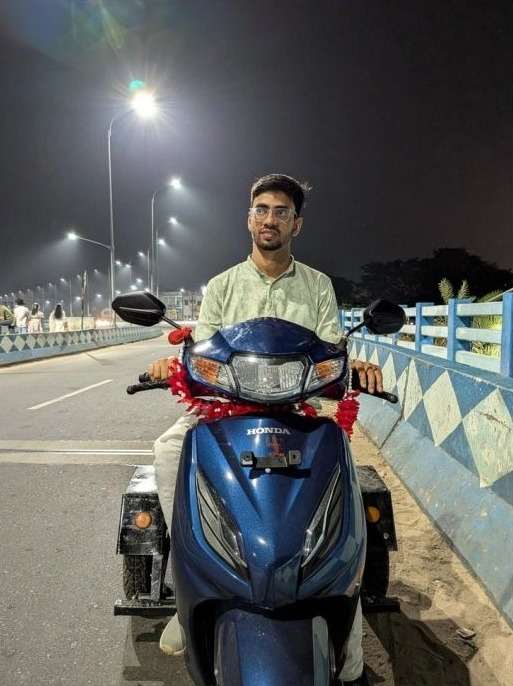
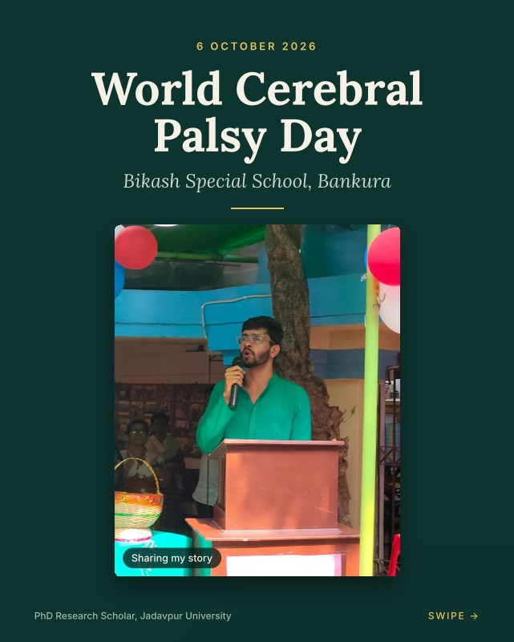

Education
Supervisor: Dr. Doyeeta Majumder
Awards & Felicitations
Certifications & Skill-Enhancement
- 2022 UGC Approved Certificate Course on Translation as a Skill, offered by CENTIL, Jadavpur University.
- 2024 Post-Graduate Certificate Course in Editing and Publishing, offered by SCTR, Jadavpur University (March to June 2024).
- 2026 Completed the CP Rise Leadership Development Programme 2025 to 2026 offered by EnAble India (Dec 2025 to March 2026). Change Project title: "Challenges Faced by Persons with Locomotor Disabilities in Using Adapted Scooters."
From Cerebral Palsy Advocacy to Personal Mobility Solutions.
Two recent posts from my LinkedIn, continuing the disability-rights and cerebral-palsy advocacy work described above.

My Second Adapted Scooter — A Long Overdue Win
After months of dealers declining to register a Divyangjan-category scooter, and a CP Rise project on the same barrier facing other users, my second adapted scooter came home just before Durgapujo. The rules exist — don't hesitate to fight for them.

Speaking at Bikash Special School, Bankura
On World Cerebral Palsy Day, I returned to Bikash Special School, Bankura — where I was trained as a child with CP — to speak about reaching doctoral research as a first-generation learner. I don't seek to inspire; I just hope it gives one parent a little hope.
My Personalized Mobility Solution
Alongside my adapted scooter, this adapted tricycle is another personalized mobility solution I rely on — built around my needs as a person with cerebral palsy, and a part of the same journey toward independent living.
Teaching Experience
Teaching TCESS (Technical Communication and English for Social Sciences) topics for students of various STEM departments at Jadavpur University since 2023.